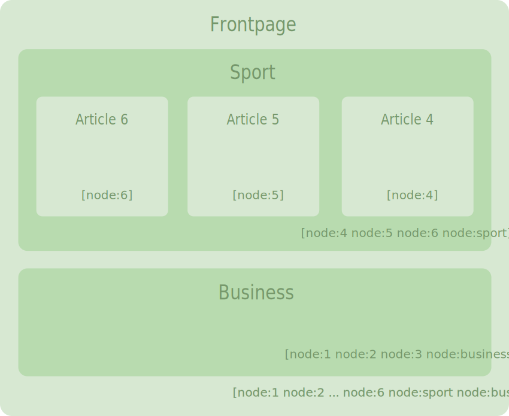
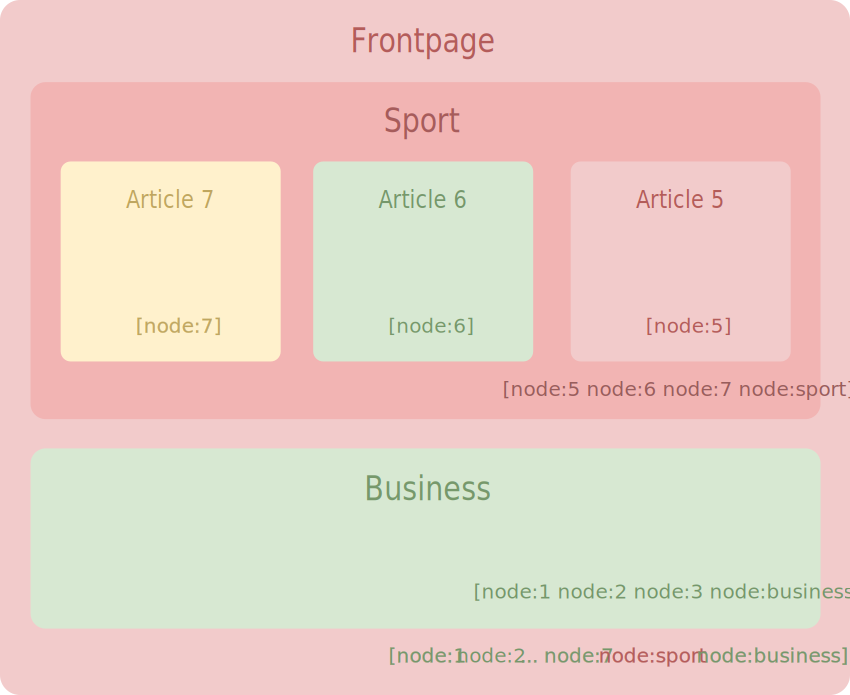

Proudly found elsewhere
Store the result of slow calculations so that they do not need to be executed again and so improve performances
max-age seconds or at expiresETag or Last-Modified304 responseVary indicates alternate version of cache content : encoding, cookies, ...X-Drupal headersmax-age is set in the admin pagesmax-age could be tune in .htaccess# Requires mod_expires to be enabled.
<IfModule mod_expires.c>
# Enable expirations.
ExpiresActive On
# Cache all files for 2 weeks after access (A).
ExpiresDefault A1209600
<FilesMatch \.php$ >
# Do not allow PHP scripts to be cached unless they explicitly
# send cache headers themselves(...)
ExpiresActive Off
</FilesMatch>
</IfModule>it is strongly recommended to disable it when coding
You just have to uncomment the following lines in settings.php
#Copy sites/example.settings.local.php to sites/default/settings.local.php
if (file_exists(__DIR__ . '/settings.local.php')) {
include __DIR__ . '/settings.local.php';
}or use drupal console: drupal site:mode dev @see https://www.drupal.org/node/2598914
settings.local.php
# Load development services
$settings['container_yamls'][] = DRUPAL_ROOT . '/sites/development.services.yml';
# Display verbose errors
$config['system.logging']['error_level'] = 'verbose';
# Do not minify css & js
$config['system.performance']['css']['preprocess'] = FALSE;
$config['system.performance']['js']['preprocess'] = FALSE;
# Disable render caching
# $settings['cache']['bins']['render'] = 'cache.backend.null';
# Disable dynamic page caching
# $settings['cache']['bins']['dynamic_page_cache'] = 'cache.backend.null';development.services.yml
parameters:
# Enable cache debug headers
http.response.debug_cacheability_headers: true
services:
# Enable a "null" cache storage
cache.backend.null:
class: Drupal\Core\Cache\NullBackendFactory
max-age & s-max-age headersInternal Page CacheX-Drupal-Cache-Tags headerscache tags metadata send by DrupalExpires header on the response ObjectX-Drupal-Cache: HIT #or MISS#cache key of render arrays:
max-age*:
context:
Allows cache variations according to: theme, language, user roles, permissions, URL, QS, timezone,...
tags:
Allows to invalidate all caches tagged with them: node:x, config:, user:x, library_info, route_match, node_list, ...
max-age HTTP header or the anonymous cache duration, see:
https://www.drupal.org/node/2352009 and
https://www.drupal.org/project/cache_control_override
They bubble from bottom to top arrays
X-Drupal-Cache-Tags HTTP headersHere's a page with two blocks containing each a nodes list (cache tags are displayed between brackets, notice the bubbling)
Let's modify node n°5 and create a new sport node (n°7).
These actions will invalidate cache tags (red)
Here in red all the content parts that should be rebuild, in green the ones that will come from Render caching
Code example: setting cache metadata on a Render Array
$config = \Drupal::config('system.site');
$current_user = \Drupal::currentUser();
$build = [
'#markup' => t('Hi, %name, welcome on @site!', [
'%name' => $current_user->getUsername(),
'@site' => $config->get('name'),
]),
'#cache' => [
'contexts' => [
'user', // So this block will be processed by #lazybuilding
],
'tags' => $config->getCacheTags(), // Same as 'tags' => ['config:system.site']
],
];
// Another way to add cache depency.
$renderer = \Drupal::service('renderer');
$renderer->addCacheableDependency(
$build,
\Drupal\user\Entity\User::load($current_user->id())
);
// Merge cache tags
$tags = Cache::mergeTags($conf_one->getCacheTags(),$conf_two->getCacheTags());
Objects that render content (like plugins) should implement
the CacheableDependencyInterface and its methods:
\Drupal\Core\Cache
public function getCacheContexts() {
// CacheableMetadata
return Cache::mergeContexts(
parent::getCacheContexts(),
['user.node_grants:view']
);
}
public function getCacheTags() {
return Cache::mergeTags(parent::getCacheTags(), ['node_list']);
}
public function getCacheMaxAge() {
return 0;
}Plugins could also inherit cache by using annotation context
Here this block will inherit the node cache metadata
* context = {
* "node" = @ContextDefinition("entity:node", label = @Translation("Node"))
* }
...
$this->getContextValue('node');
See:
https://drupal.stackexchange.com/questions/199527/how-do-i-correctly-setup-caching-for-my-custom-block-showing-content-depending-o
https://api.drupal.org/api/drupal/core!core.api.php/group/annotation/8.5.x
https://api.drupal.org/api/drupal/core!lib!Drupal!Core!Annotation!ContextDefinition.php/group/plugin_context/8.5.x
To prevent highly dynamics content to systematically invalid page cache,
Dynamic Page Cache replaces them with placeholders before writing cache.
Each time the cache is requested their content will be rendered on the fly.
This mechanism is also used by Bigpipe (now enable by default in 8.5)
https://www.drupal.org/docs/8/api/render-api/auto-placeholdering
Bigpipe demo
Lazybuilder triggering:
#lazy_builder key:
// Callback : class:method or (better) service:method
return [
'#lazy_builder' => ['hello_world.lazy_builder:renderSalutation', []],
'#create_placeholder' => TRUE,
];core/core.services.yml:
renderer.config:
auto_placeholder_conditions:
max-age: 0
contexts: ['session', 'user']
tags: []drupal_static() could still be used for procedural codeDrupal cache Getter / Setter
function my_custom_data_processing();
// Define my cache key
$key = 'my_module' . ':' . __FUNCTION__;
// Does the cache exists ?
if ($cache = \Drupal::cache()->get($key)) {
$data = $cache->data;
}
// No cache: process the data and set the cache.
else {
$data = my_slow_data_process();
\Drupal::cache()->set($key, $data);
}
return $data;
}Multiples
\Drupal::cache()->getMultiple(['key1','key2',...]);
\Drupal::cache()->setMultiple(['key1' => ['data' => 1],'key2' =>...]);Delete cache
// Deleting cache (fast)
\Drupal::cache()->delete('my_module:cached_data');
\Drupal::cache()->deleteMultiple([
'my_module:key1',
'my_module:key2',
...
]);
\Drupal::cache()->deleteAll();;Set an expiration
// Add a cache lifetime to my cache (timestamp)
\Drupal::cache()->set($key, $data, REQUEST_TIME + 600);
Add tags
// Add tags to my cache
\Drupal::cache()->set(
$key,
$data,
Cache::PERMANENT,
[
'tag1',
'node:1',
'config:system.menu',
'config:my_module',
]
);Get tags
// Get tags from an object that implements CacheableDependencyInterface:
$node->getCacheTags();
\Drupal\views\Entity\View::load('front')->getCacheTags();
// List cache tags associated with this entity type
// Will detect newly created entities
$entity_type->getListCacheTags(); //EntityTypeInterface;Invalidate tags
// Should implements CacheTagsInvalidatorInterface
// my_tag invalidation counter = 0
$cache_tag_invalidator->invalidateTags(['my_tag']);
// my_tag invalidation counter = 1
Cache::invalidateTags(['my_tag']);
// my_tag invalidation counter =2On cache writing, all tags invalidation counter are sum up to provide the cache checksum.
On cache reading, the checksum is computed again, if it differs, the cache is rebuilt.
Return stale cache while building the new one
$cache = \Drupal::cache()->get('my-key', TRUE);
if ($cache && $cache->valid) {
return $cache->data;
} elseif (\Drupal::lock()->acquire('my-key')) {
// Lock the cache and rebuild it.
$data = my_slow_data_process();
\Drupal::cache()->set('my-key', $data);
return $data;
} elseif ($cache) {
// Someone else is rebuilding, work with stale data.
return $cache->data;
} else {
// Wait or rebuild.
}Cache is split into containers:
Each could be linked to a specific storage
You could define your own bin as a service
#yourmodule.services.yml
cache.your_bin:
class: Drupal\Core\Cache\CacheBackendInterface
tags:
- { name: cache.bin }
factory: cache_factory:get
arguments: [your_bin]
and enable it in settings.php
// Use redis by default.
$settings['cache']['default'] = 'cache.backend.redis';
// Use the null backend to disable caching for certain bins.
$settings['cache']['bins']['render'] = 'cache.backend.null';Where cache are actually stored
(core/core.services.yml):
cache.backend.memcache_storagecache.backend.redisChainedFast Backend (cache.backend.chainedfast) allow to "chained" a fast backend on top a slow but shared one.